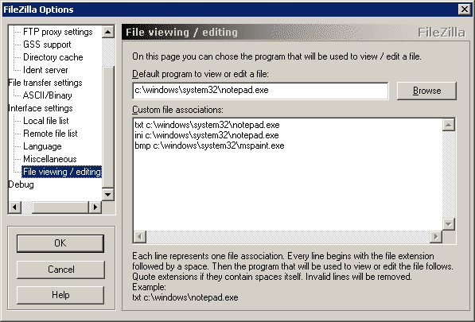

File viewing / editing
Overview:
FileZilla can view / edit files on the server. On this page you can associate programs with the different filetypes.

Default program to view or edit a file
The default program is always used to open a file if no other program has been specified for that type of file.
Custom file associations
Each line represents one file association. Every line begins
with the file extension followed by a space. Then the program that should be
used to open the file follows. You have to quote all extensions, which contain
spaces. Invalid lines will be removed from the list.
For files without an extension, for example file with the name README which can
be found on a lot of servers, enter a single dot as filetype.
Some examples:
txt c:\windows\system32\notepad.exe
abc c:\program files\abc\abc.exe
"my very long extension" c:\mytool.exe
. c:\mytools\textview.exe